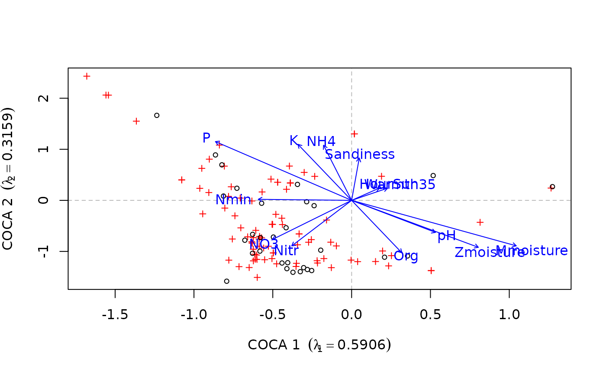

envfit.coca.RdThe function fits environmental vectors or factors to a Co-CA ordination. The projections of points onto vectors have maximum correlation with corresponding environmental variables, and the factors show the averages of factor levels.
a Co-CA ordination object, the result of a call to
coca.
a data frame, matrix or vector of environmental/external variable(s) to be fitted to the ordination. The variables may be of a mixed type (factors and continuous variables) in a data frame.
character; which of the response or predictor ordinations should be used during fitting of vectors and factors.
numeric; the axes to which vectors and factors are fitted.
logical; should sacling be applied. See
scores.symcoca.
weights used in fitting vectors and factors.
Remove points with missing values in ordination scores or
environmental variables. The operation is casewise; the whole row of
data is removed if there is a missing value and na.rm =
TRUE.
An integer vector or factor specifying the strata for permutation. If supplied, observations are permuted only within the specified strata.
Number of permutations for assessing significance
of vectors or factors. Set to 0 to skip permutations.
Arguments passed to vectorfit and
factorfit.
See envfit for details of the method.
Returns an object of class envfit.
coca for fitting models. envfit for
details of the generic function and the computations performed.
## symmetric CoCA
data(beetles)
data(plants)
## log transform the bettle data
beetles <- log(beetles + 1)
## fit the model
bp.sym <- coca(beetles ~ ., data = plants, method = "symmetric")
#>
#> Removed some species that contained no data in: beetles, plants
## load the environmental data
data(verges)
## fit vectors for the environmental data
sol <- envfit(bp.sym, verges, which = "response")
sol
#>
#> ***VECTORS
#>
#> COCA 1 COCA 2 r2 Pr(>r)
#> Mmoisture 0.76095 -0.64881 0.4686 0.036 *
#> Zmoisture 0.65812 -0.75292 0.3711 0.076 .
#> Org 0.29636 -0.95508 0.2873 0.162
#> Sandiness 0.05840 0.99829 0.1718 0.422
#> pH 0.64658 -0.76284 0.1683 0.490
#> NO3 -0.54818 -0.83636 0.2088 0.294
#> NH4 -0.16274 0.98667 0.2975 0.181
#> Nmin -0.99942 0.03412 0.0872 0.678
#> P -0.60030 0.79978 0.5153 0.034 *
#> K -0.29634 0.95508 0.3284 0.114
#> Nitr -0.39179 -0.92005 0.2336 0.274
#> HourSun 0.59022 0.80724 0.0220 0.878
#> Warmth35 0.69088 0.72297 0.0269 0.833
#> ---
#> Signif. codes: 0 ‘***’ 0.001 ‘**’ 0.01 ‘*’ 0.05 ‘.’ 0.1 ‘ ’ 1
#> Permutation: free
#> Number of permutations: 999
#>
#>
## plot the response matrix and the fitted vectors
biplot(bp.sym, which = "y1")
plot(sol)
